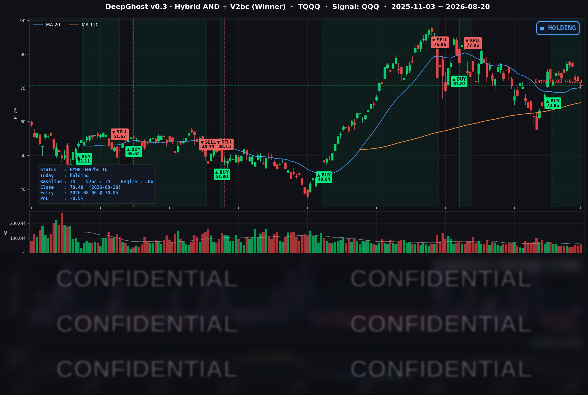

👻 매일 시그널과 히스토리를 홈페이지에서 한눈에 → www.ghostai.co.kr
> 어제 금리를 눌러줬던 재무부 바이백 효과가 하루 만에 증발했습니다. 월마트 실적 쇼크와 유가 재상승이 얹혔습니다. 이번 하락이 건전한 조정인지, 하락 시작인지 아무도 모릅니다만, 우리 AI 모델은 아직은 건전한 조정으로 판단하고 있습니다. 중요한 분기점이내요.
📊 오늘의 매매 신호
| 항목 | 내용 |
|---|---|
| 오늘 할 일 | ✅ 아무것도 안 해도 됩니다 |
| 포지션 상태 | 📈 TQQQ 보유 중 (IN POSITION) |
| 매수 진입일 | 2026-08-06 (11거래일째) |
| 진입가 → 현재가 | $70.85 → $70.48 |
| 현재 포지션 수익 | -0.5% |
TQQQ 시그널 — IN POSITION
현재 상태: 매수 포지션 유지 중 | 이번 포지션 수익률 -0.5%

전략의 TQQQ 트랙은 8월 6일 진입 자리를 11거래일째 유지하고 있습니다. 오늘 새로 나온 매수·매도 신호는 없습니다. 다만 평가수익이 어제 +1.7%에서 오늘 -0.5%로 하루 만에 뒤집혔습니다. 진입 후 처음으로 원금 아래에 있는 상태입니다.
손실을 만든 건 방향이 아니라 시간입니다
오늘 기록은 레버리지의 위험을 보여줍니다. 진입 시점과 지금의 나스닥100(QQQ)을 나란히 놓아 보겠습니다.
| 구분 | 8월 6일 진입 시점 | 8월 20일 종가 | 변화 |
|---|---|---|---|
| 나스닥100 (QQQ) | 710.82 | 710.93 | +0.02% |
| TQQQ (3배) | $70.85 | $70.48 | -0.52% |
기초지수는 제자리로 돌아왔는데 3배 상품은 원금 아래입니다. 방향이 틀린 게 아닙니다. 산술적으로만 따지면 지수가 +0.02%일 때 3배 상품은 +0.05% 근처여야 하니, 그사이 0.5%포인트 남짓이 어딘가로 사라진 셈입니다.
사라진 자리는 두 곳입니다. 첫째는 비용입니다. 3배짜리는 매일 배율을 다시 맞추기 위해 파생상품을 굴리고, 그 과정에서 조달비용과 운용보수가 하루 단위로 빠져나갑니다. 최근 1년 데이터로 재보면 TQQQ는 지수가 완전히 제자리인 날에도 하루 평균 0.04% 정도씩 뒤로 밀립니다. 열 번의 거래일이면 0.4%포인트가 조용히 쌓입니다. 오늘 손실의 약 80%가 이 항목 하나로 설명됩니다.
둘째는 변동성 손실입니다. 올랐다 내렸다를 반복하면 지수는 제자리로 돌아와도 3배짜리는 돌아오지 못합니다. 100이 3배로 10% 올랐다가 다시 10% 내리면 지수는 -1%지만 3배 상품은 -9%가 됩니다. 이번 구간처럼 방향 없이 흔들린 열흘은 이 손실이 누적되기 딱 좋은 환경이었습니다.
정리하면 이렇습니다. 레버리지 상품은 오래 들고 있는 것 자체가 비용입니다. 방향이 맞을 때 세 배로 벌어주는 대가로, 방향이 없을 때는 가만히 있어도 조금씩 잃습니다. 이번 트레이드는 8월 13일 한때 평가수익이 +8%대까지 올라갔던 자리였습니다. 그 쿠션이 5거래일 만에 전부 반납된 것도 같은 이유입니다.
지금 전략의 상태
가격의 손실과 모델의 판단은 다른 신호입니다. 이 전략은 손실률을 정해 놓고 자르는 방식이 아니라, 자체 판단 기준이 바뀔 때 정리하는 방식입니다. 오늘 기준으로는 정리 근거가 아직 성립하지 않아 보유가 유지되고 있습니다.
다만 여유는 뚜렷하게 줄었습니다. 모델이 정리 쪽으로 돌아서는 데 필요한 나스닥100의 추가 하락폭이 어제 -2%대에서 오늘 -1%대로 절반 아래로 좁혀졌습니다. 오늘 같은 하루가 조금만 더 커지면 판단이 바뀔 수 있는 구간이라는 뜻입니다. 반대로 지수가 되돌아오면 여유도 함께 회복됩니다. 예측이 아니라 관찰의 영역입니다.
오늘 미국 시장 — 시황 요약
지수 마감
| 지수 | 종가 | 등락률 |
|---|---|---|
| S&P 500 | 7,641.16 | -0.87% |
| 나스닥 종합 | 26,067.17 | -1.00% |
| 다우존스 | 52,759.21 | -1.32% |
| 러셀 2000 | 2,992.43 | -1.34% |
| QQQ (나스닥100) | 710.93 | -0.72% |
어제와 정반대 그림입니다. 어제는 S&P·다우·러셀이 오르는데 나스닥100만 홀로 내렸습니다. 오늘은 전부 내렸고, 오히려 나스닥100이 가장 덜 빠졌습니다. 낙폭 1·2위는 대형 기술주가 아니라 다우와 러셀 2000이었습니다.
저변도 이를 뒷받침합니다. S&P 500 편입 502종을 직접 집계하면 오른 종목 156개, 내린 종목 342개로 상승 비율이 31%에 그쳤습니다. 특정 테마가 팔린 게 아니라 시장 전체가 위험 노출을 줄인 하루였습니다.
지수 자체는 아직 정상 조정 범위입니다. S&P 500은 고점 대비 -2.0%에 불과합니다. 다만 3배 레버리지인 TQQQ는 6월 고점 대비 -19.2% 로, 같은 시장을 보고 있어도 체감이 전혀 다릅니다.
국채 금리 동향
| 만기 | 수익률 | 전일 대비 |
|---|---|---|
| 3개월 | 3.703% | +0.3bp |
| 5년 | 4.387% | +3.4bp |
| 10년 | 4.696% | +4.3bp |
| 30년 | 5.237% | +4.3bp |
어제의 금리 하락이 하루 만에 거의 전부 되감겼습니다. 어제 이 자리에서 "재무부 바이백 효과가 하루짜리인지"를 물었는데, 답은 하루짜리였습니다.
| 날짜 | 10년 | 30년 |
|---|---|---|
| 8/18 (화) | 4.706% | 5.285% |
| 8/19 (수) | 4.653% | 5.194% ← 바이백 확대 발표 |
| 8/20 (목) | 4.696% | 5.237% ← 되돌림 |
10년물은 발표 직전 수준에 거의 복귀했습니다. 왜 효과가 하루밖에 못 갔는지는 세 가지로 설명됩니다. 첫째, 실제 매입 시행은 9월 9일이라 3주의 수급 공백이 남아 있습니다. 둘째, 미국 국가부채가 8월 19일 발표 기준 사상 처음 40조 달러를 넘었습니다(40조 470억 달러). 39조 달러 돌파 이후 불과 3개월 만입니다. 회당 40억 달러 규모의 매입은 이 크기 앞에서 상징적입니다. 셋째, 유가가 다시 올라 물가 기대를 밀어 올렸습니다.
곡선 모양도 의미가 있습니다. 3개월물은 사실상 제자리인데 중장기물만 올랐습니다. 이는 "연준이 곧 움직인다"는 정책 기대의 변화가 아니라 재정과 물가 지속성에 대한 요구 수익률이 다시 올라간 것입니다. 장단기 스프레드(10년-3개월)는 +99.3bp로 정상적인 우상향 곡선을 유지해, 침체 신호는 나오지 않았습니다.
연준 발언 & 금리 패스
오늘 예정된 연준 인사의 공식 연설은 없었습니다. 대신 어제 공개된 7월 FOMC 의사록이 하루 늦게 값에 반영됐습니다.
- 정책금리 3.50~3.75% 동결, 표결은 9 대 3. 반대표를 던진 해맥(클리블랜드)·카시카리(미니애폴리스)·로건(댈러스) 세 명은 즉시 0.25%p 인상을 주장했습니다.
- 의사록에는 "물가가 더 내려오지 않으면 추가 긴축이 필요할 것" 이라고 평가한 위원이 다수였다는 대목이 담겼습니다. 일부는 현재 금융여건이 충분히 긴축적이지 않을 수 있다고 봤습니다.
- 물가 상승 원인으로는 에너지를 포함한 공급 충격과 관세가 지목됐고, 상승 압력이 광범위한 품목에 걸쳐 있다는 관찰도 함께 실렸습니다.
어제는 바이백 뉴스가 이 매파적 내용을 덮었습니다. 오늘은 순서가 뒤집혀 바이백 재료가 소진되자 의사록이 뒤늦게 반영된 것입니다.
여기에 오늘 아침 지표가 힘을 보탰습니다. 주간 신규 실업수당 청구가 20만 6천 건으로 예상(21만 건)을 밑돌았습니다. 고용이 견조하다는 확인은, 인상을 논의 중인 연준에게 인하할 이유가 없다는 근거를 하나 더 줍니다.
다만 한 방향으로만 읽지는 않는 편이 좋습니다. 같은 발표에서 계속청구건수는 1만 8천 건 늘어난 179만 9천 건으로 예상을 웃돌았고, 전주 신규청구도 20만 9천 → 21만 2천 건으로 상향 수정됐습니다. 해고는 적지만 한번 실직하면 재취업이 느려지는 구도입니다.
다음 FOMC는 9월 16일이고, 지금 시장의 논쟁은 "언제 인하하나"가 아니라 "인상이 있을 것인가" 입니다. 그 앞에 8월 27~29일 잭슨홀, 특히 8월 28일 워시 의장의 취임 후 첫 기조연설이 놓여 있습니다.
오늘의 핵심 이슈
- 바이백 안도의 소멸 — 오늘 장세를 규정한 단일 요인입니다. 금리가 되돌아오자 밸류에이션 압박이 전 섹터로 번졌고, 금리 민감도가 높은 소형주(러셀 -1.34%)와 소프트웨어가 가장 크게 맞았습니다. 배경에는 국가부채 40조 달러 돌파라는 구조적 부담이 있습니다.
- 월마트 -9.15% — 실적은 이겼는데 주가가 무너졌습니다. 매출 1,879억 달러(+5.9%), 조정 EPS 0.81달러(+19.1%)에 연간 가이던스까지 올렸지만, 미국 기존점 매출이 +2.6%로 기대치(+3.7%)에 미달했습니다. 회사는 고객이 높은 휘발유 가격 때문에 다른 소비를 포기하고 있다고 설명했고, 시장은 이를 월마트 개별 이슈가 아니라 미국 소비자 전반의 체력 문제로 읽었습니다. 영업이익 증가분에 29억 달러 규모 관세 환급이라는 일회성 항목이 섞인 점도 부담이었습니다.
- 유가 재점화 — 미국이 이란을 상대로 강도 높은 경제 제재 방침을 밝히면서 원유가 다시 올랐습니다. 브렌트 93.25달러, WTI 86.30달러로 5일 기준 각각 +7.1% / +6.2% 입니다. 유가는 물가 → 장기금리 → 소비로 이어지는 이번 국면의 뿌리 변수이고, 오늘 그 세 경로가 한꺼번에 확인됐습니다. 월마트가 지목한 부진 원인이 바로 이 유가라는 점에서 2번과 직접 연결됩니다.
변동성 & 투자심리
- VIX (변동성 지수): 14.89 → 16.01 (+7.52%). 상승률은 컸지만 절대 수준은 20일 평균(16.18)과 60일 평균(16.97)을 모두 밑돌고, 최근 1년 분포의 하위 25% 수준입니다.
- 공포탐욕지수: 출처에 따라 46(중립)에서 57(탐욕)까지 갈립니다. 단일 값으로 단정하기 어려워 범위로 적습니다. 방향은 "중립~약한 탐욕"입니다.
지수가 1% 안팎 빠지고 502종 중 342종이 내렸는데도 옵션시장은 헤지 수요를 크게 늘리지 않았습니다. 오늘의 하락은 공포에 의한 투매가 아니라 질서 있는 위험 축소로 읽는 편이 정확합니다. 구조적 붕괴의 징후는 아직 보이지 않습니다.
다만 반대로 보면, 물가는 아직 목표 위에 있고 30년물은 19년래 고점권이며 유가는 다시 오르는 중인데 변동성 지표는 1년 중 낮은 자리에 있습니다. 시장이 매크로 위험을 값에 충분히 넣어두지 않았다는 뜻이기도 합니다. 레버리지 상품은 그 재평가가 오면 그대로 받습니다.
매크로 & 원자재
- 유가: WTI $86.30 (+0.55%), 브렌트 $93.25 (+1.78%) — 5일 기준 +6.2% / +7.1%
- 금: $4,578.30 (+1.98%) — 20일 기준 +13.1%
금리가 올랐는데도 금이 함께 올랐다는 점이 특징입니다. 실질금리 논리보다 재정 우려와 지정학 위험을 대비하려는 수요가 앞서고 있다는 뜻입니다. 8월 들어서만 13% 넘게 오르며 흐름이 살아 있습니다.
정정 안내: 어제 회차에서 금을 "하루 +4.90% 폭등, 사상 최고권"으로 적었습니다. 원자재 시세는 마감 직후 잠정치가 들어왔다가 다음 날 확정치로 정정되는데, 8월 19일 금 종가의 확정치는 4,489.40달러(+2.83%) 였습니다. 또한 보유 데이터 전체 기간의 최고 종가는 2026년 1월 29일 5,318.40달러로, 현재 가격은 그보다 14% 아래입니다. "사상 최고"는 사실과 다릅니다. 방향(금 강세)은 맞았으나 강도가 과장됐던 점을 바로잡습니다. 오늘 원자재 수치 역시 잠정치라 소수점 단위는 내일 조정될 수 있습니다.
주요 종목 동향
| 종목 | 종가 | 등락률 | 비고 |
|---|---|---|---|
| MU | 974.33 | +3.97% | 커버리지 최고. 100억 달러 규모 메모리 연구소 설립 발표 |
| AVGO | 364.03 | +0.43% | 3거래일 연속 하락 뒤 첫 반등. 5일 -12.87%는 여전히 최악 |
| META | 545.83 | -0.04% | 사실상 보합. 5일 -8.26%로 메가캡 중 최약 |
| NFLX | 80.14 | -0.10% | 보합. 5일 +2.43%로 플러스 유지 |
| NVDA | 216.85 | -0.33% | 8월 26일 실적 대기. 반도체 그룹 내 방어적 |
| MSFT | 481.15 | -0.65% | 소프트웨어 그룹 평균(-0.94%)보다 선방 |
| INTC | 92.13 | -0.72% | 낙폭 진정. 5일 -11.89% |
| QCOM | 160.74 | -0.72% | 특이 재료 없음 |
| GOOGL | 340.67 | -1.17% | 특이 재료 없음 |
| TSLA | 345.13 | -1.71% | 어제 +4.23% 급등분 일부 반납 |
| AAPL | 311.30 | -1.75% | 장중 320.28까지 올랐다가 반전 마감 |
| AMZN | 260.11 | -2.16% | 커버리지 최악. 월마트발 소비 우려 직격 |
오늘 유일한 뚜렷한 강세는 메모리였습니다. 마이크론은 아이다호 보이시에 향후 10년간 100억 달러를 투입하는 메모리 전용 연구기관 설립 계획을 발표했습니다. 다만 이를 마이크론 단독 재료로 보기는 어렵습니다. 같은 날 메모리 4개 종목이 모두 올랐습니다. 8월 18~19일 이틀간 12.8% 무너진 뒤의 되돌림 위에 개별 호재가 얹힌 구조로 보는 편이 정확합니다. 참고로 100억 달러는 마이크론 분기 잉여현금흐름의 절반 수준이라, 비용 부담을 지적하는 시각도 함께 나왔습니다.
한편 이틀간 이어진 "반도체에서 소프트웨어로"의 자금 이동은 오늘 끝났습니다. 반도체 그룹이 -0.10%로 사실상 멈춘 사이 소프트웨어가 -0.94%로 더 크게 밀렸습니다. 어제 금리 하락 수혜를 독점했던 쪽이 오늘 상승분을 그대로 반납한 것입니다. 즉 오늘은 테마 간 이동이 아니라 모든 테마에서 동시에 위험을 줄인 하루였습니다.
내일은 S&P 글로벌 8월 플래시 PMI가 유일한 주요 지표입니다. 그리고 다음 주에는 8월 26일 엔비디아 실적과 8월 28일 워시 의장의 잭슨홀 첫 기조연설이 이틀 간격으로 놓여 있습니다. AI 투자 논쟁과 금리 경로 논쟁이 48시간 안에 함께 판정받는 구간입니다. 이번 국면의 최대 변곡점이 될 가능성이 높습니다.
Ghost.AI — Quantitative AI Investment
Model: DeepGhost v0.3 | Transformer-Based Deep Learning
Coverage: 13 tickers | Updated every trading day after US market close
⚠️ 본 자료는 정보 제공 목적으로만 작성되었으며 투자 권유가 아닙니다. 모든 투자의 책임은 투자자 본인에게 있습니다. 과거 성과가 미래 수익을 보장하지 않습니다.
[유의사항]
- 본 서비스는 불특정 다수를 대상으로 발행되는 단방향 정보 제공 서비스이며, 투자자 개인의 재산 상황·투자 목적·위험 선호도를 반영한 개별 투자 조언이 아닙니다.
- 고스트에이아이 주식회사는 고객과 쌍방향 의사소통(개별 상담, 맞춤형 자문 등)을 제공하지 않습니다.
- 본 콘텐츠는 투자 권유 또는 매매 주문의 청약·청약의 권유에 해당하지 않으며, 최종 투자 판단 및 그에 따른 손익의 책임은 전적으로 투자자 본인에게 있습니다.
고스트에이아이 주식회사